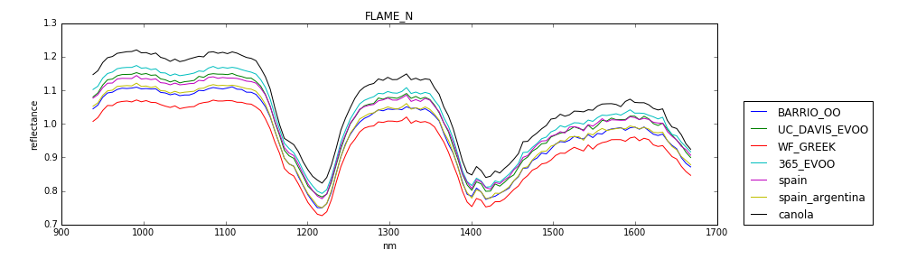
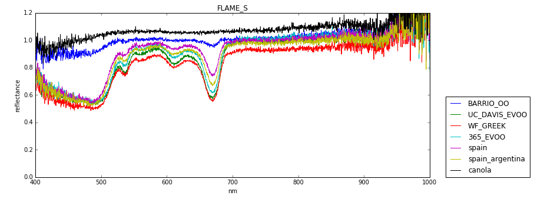
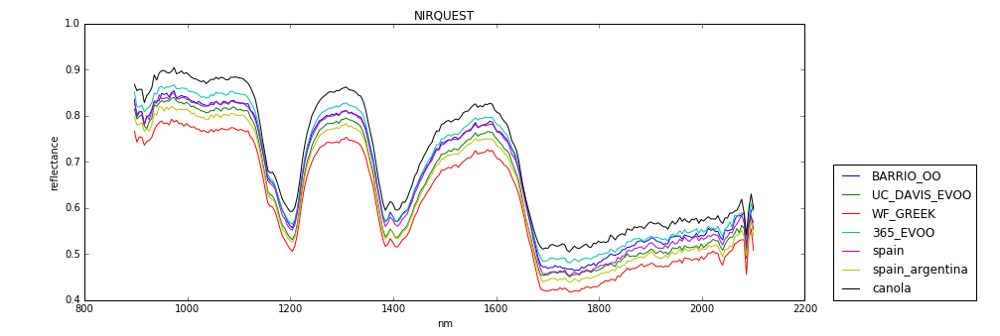
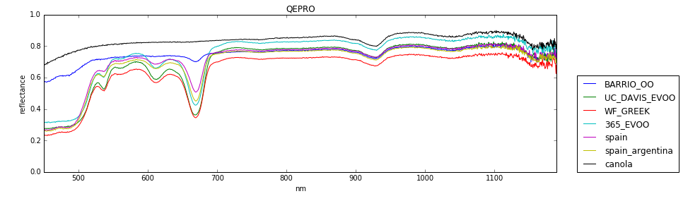

Experiment #1 -- 4/25/2017
Operators:
Overview
Below is a very rough first pass on using the Ocean Optics superbench spectrometers to assess olive oil using a 'transflectance' setup with titer plates, in which the superbench gun was held at a fixed distance above the titer plates.
Procedure
We used a superbench gun aimed directly down at a titer plate, with individual olive oil samples placed in the titer plate wells.
There was a one inch spacing between superbench gun and the top surface of the plate -- correspondeding to the gun height required to fully illuminate the entire titer plate area with the light beam emitted by the gun.
We calculated the reflectance of various olive oils for various spectrometers as:
\[reflectance = \frac{sample-dark}{reference-dark}\]
where:
- 'dark' involved measuring an empty titer plate well, with no light source on. The light input fiber on the gun was not otherwise covered.
- 'reference' involved measuring an empty titer plate well, with the light source on.
- 'sample' involved measuring the titer plate filled with analyte.
Instruments
The following spectrometers were used:
- 'FLAME_N': An Ocean Optics Flame NIR spectrometer.
- 'FLAME_S': The Ocean Optics Flame VIS-NIR spectrometer.
- 'NIRQUEST': An Ocean Optics NIR Quest spectrometer.
- 'QEPRO': An Ocean Optics QEPRO spectrometer.
Analytes
The analytes for each spectrometer were:
- 'BARRIO_OO' -- Phillipo Barrio Olive Oil
- 'UC_DAVIS_EVOO' -- UC Davis Extra Virgin Olive Oil
- 'WF_GREEK' -- Whole Foods Greek Extra Virgin Olive Oil
- '365_EVOO' -- 365 Brand Extra Virgin Olive Oil
- 'spain' -- Stop & Shop Extra Virgin Olive Oil (labeled origin: Spain)
- 'spain_argentina' -- Stop & Shope Extra Virgin Olive Oil (labeled origin: Spain, Argentina)
- 'canola' -- Canola oil
Plots
   
- Reflectance values greater than one may indicate that our choice of reference and dark standards should be improved (and indeed they should in any case). A next run can use a calibration standard for 'reference', and cover the gun fiber input for the 'dark' spectrum.
- No effort was yet made to assess photometric or wavelength linearity on any of the spectrometers.